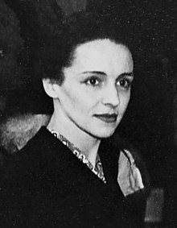

Cuộc đời của Marie Curie rất nhiều nét cao siêu đến nỗi người ta muốn kể lại như một câu chuyện cổ tích.
Một phụ nữ thuộc một dân tộc bị áp bức, nghèo và đẹp. Theo tiếng gọi của một chí hướng mãnh liệt, bà rời tổ quốc Ba Lan của mình, đến Paris học, sống những năm cô đơn túng bách.
Bà gặp Pierre Curie, cùng một thiên tư hiếm có. Hai người lấy nhau. Hạnh phúc của họ có một chất lượng duy nhất.
Qua nỗ lực kiên trì và vô vàn gian khổ, Marie và Pierre Curie tìm ra một chất màu nhiệm: đó là nguyên tố Ra-đi. Phát minh này không chỉ khai sinh ra một khoa học mới và một triết học mới, nó còn mang đến cho loài người cách điều trị một căn bệnh khủng khiếp.
Giữa lúc vinh quang của hai nhà bác học lan khắp thế giới, tai ương đổ xuống đầu Marie. Phút chốc, cái chết cướp đi của bà người bạn đời kỳ diệu.
Đau khổ và bệnh hoạn không sờn lòng, bà tiếp tục công việc đang tiến hành, phát triển một cách rực rỡ bộ môn khoa học do hai vợ chồng sáng lập ra.
Cho đến cuối đời, Marie Curie chỉ biết có cống hiến. Với thương binh, bà đã hiến dâng tất cả lòng tận tụy và sức khỏe của mình. Sau này bà dành toàn bộ kiến thức và thì giờ cho những sinh viên từ khắp năm châu đến học, được bà hết lòng khuyên răn, đào tạo thành những nhà bác học tương lai.
Xong sự nghiệp, kiệt sức, bà từ giã cuộc đời sau khi đã khước từ phú quý và dửng dưng với danh vọng.
*
Câu chuyện không khác gì truyền thuyết này, tôi cảm thấy có tội lỗi nếu đặt thêm vào dù chỉ là một điều trang trí nhỏ bé nhất. Mỗi giai đoạn được kể ra đây đều đã xác minh chắc chắn, mỗi lời chủ yếu là trung thực, cả đến màu sắc một chiếc áo. Sự việc đã xảy ra, lời lẽ được nói ra đúng như vậy.
Họ hàng bên mẹ tôi ở Ba Lan, nhất là dì ruột tôi là bà Du-xki, người chị thân thiết của mẹ tôi, đã cung cấp cho tôi những lá thư quý giá, và những kỷ niệm sống về tuổi niên thiếu của nhà nữ bác học. Viết về cuối đời của Marie Curie, tôi đã dựa vào giấy tờ riêng cùng những ghi chép vắn tắt của bà và những câu chuyện và thư từ của bạn bè người Pháp và người Ba Lan, những ký ức của chị tôi là Irène Joliot-Curie và anh rể tôi là Frédéric Joliot.
Mong rằng bạn đọc, qua những diễn biến nhất thời của một quãng đời, nhận rõ điều mà ở bà Curie còn quý hơn cả sự nghiệp và cuộc sống nên tranh của bà: đó là tính kiên định, sự nỗ lực kiên trì, tất thắng của trí tuệ, lòng hy sinh của một con người đã biết cho tất cả mà không biết lấy một thứ gì, thậm chí nhận một thứ gì. Và sau cùng là tâm hồn mà không có gì – thành công xuất sắc hay hoạn nạn – làm vẩn đục được tính trong trắng tột bực.
Chính do tâm hồn như vậy mà Marie Curie đã không chút ngần ngại gạt xa những thuận lợi mà danh vọng vẫn đem lại cho những thiên tài chân chính.
Bà đã phải đau khổ vì thế giới đương thời cứ muốn bà đóng vai một nhân vật tiếng tăm. Con người vốn nghiêm khắc với mình và sống nhiều về nội tâm, đã không thể chọn thái độ thường đi đôi với danh vọng: thân mật, hòa nhã một cách máy móc, nghiêm nghị cố ý, khiêm tốn bề mặt.
Marie Curie không biết kiểu cách cư xử của những người danh tiếng.
*
Tôi sinh ra khi mẹ tôi đã 37 tuổi. Lớn lên, đủ trí khôn nhận xét, tôi thấy bà Curie đã là một phụ nữ có tuổi, lừng lẫy. Thế nhưng chính “nhà bác học nổi tiếng” lại xa lạ với tôi hơn cả có lẽ vì Marie Curie không hề bận tâm với ý nghĩ rằng mình có danh vọng. Và tôi luôn luôn cảm thấy như vẫn sống với một nữ sinh viên nghèo dạt dào ước vọng tên là Marie Skłodowska, từ rất lâu trước khi tôi ra đời.
Cho đến lúc thở hơi cuối cùng, Marie vẫn giống người con gái đó. Một sự nghiệp lâu dài, vất vả, sáng chói đã không làm cho bà lớn hơn hoặc thấp kém, hóa thần thánh hoặc sa đọa. Và đến ngày cuối cùng, vẫn một vẻ dịu hiền, bướng bỉnh, dút dát và ham hiểu biết như thuở hàn vi.
Đối với một con người như vậy, lúc chết, giá có được nghi lễ linh đình, theo kiểu mà các chính phủ thường dành cho các vĩ nhân của họ thật là một điều phạm thánh, bất kính. Bà được an táng giản dị, lặng lẽ tại một nghĩa trang thôn quê[1], giữa hoa lá đồng nội, dường như cuộc sống vừa chấm dứt cũng bình dị như trăm nghìn cuộc sống khác…
*
Ước gì tôi có khiếu viết văn để miêu tả người nữ sinh muôn thuở mà nhà bác học Anh-xtanh đã nói:
“Trong tất cả những danh nhân, bà Curie là người duy nhất không bị vinh quang làm cho hư hỏng”.
Bà đã bước trên đường đời như một người ngoài cuộc, nguyên vẹn, hồn nhiên, gần như dửng dưng với số phận lạ lùng của mình.
EVE CURIE

Ève Denise Curie